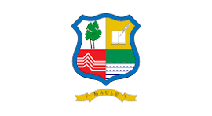

30 de Julio 2025

El día de la Región del Maule se celebra cada 30 de julio. Esta fecha conmemora la ceremonia de juramento y entronización del Corregidor del Maule, Capitán Diego de Rojas, en 1593. En esa ocasión, Rojas prestó juramento ante el gobernador de Chile y el cabildo de Santiago, marcando el inicio de la administración civil, judicial y militar del Maule.
La celebración se realiza para recordar la importancia histórica de la creación del corregimiento del Maule, cuyos límites eran similares a los de la actual región.

Frente a Martín García Oñez de Loyola, Gobernador de Chile, y los miembros del cabildo de Santiago, el capitán Diego de Rojas, veterano de la guerra de Arauco, prestó juramento un 30 de julio de 1593, para servir como Corregidor del Maule, partido (región) creado ese mismo año por el gobernador antes mencionado. Diego de Rojas fue la primera autoridad nombrada para el novel corregimiento y en sus manos quedaron concentrados el poder civil, judicial y militar del Maule.
Tan importante como el nombramiento, fueron los límites del territorio puestos bajo la autoridad del corregidor Rojas. Sin ciudades españolas, el documento reconoció los pueblos de indios, asociados a encomiendas, puestos bajo la jurisdicción de la autoridad colonial. Cauquenes, Chanco, Duao, Gonza, Gualemos, Huenchullamí, Loncomilla, Lontué, Lora, Mataquito, Peteroa, Peuquén, Pocoa, Pungal, Purales, Putagán y Vichuquén son la primera manifestación de caseríos organizados bajo la legislación española. Los límites del corregimiento del Maule señalaban que al norte limitaba con el estero de Nilahue y los cerros de Teno, mientras el estero de Rayas y el río Perquilauquén marcaban el límite sur. La cordillera de Los Andes y el mar del Sur (océano Pacífico) cerraban el corregimiento por el este y oeste respectivamente. Prácticamente los mismos límites que hoy tiene la región del Maule.
Actualidad
Desde el año 2002 y por disposición del Gobierno Regional, se celebra el Día de la Región del Maule cada 30 de julio. Las autoridades regionales de la época dispusieron también otras fechas importantes de conmemoración: Entre el 30 de julio y el 30 de agosto se celebra el Mes de la región del Maule, el 14 de agosto conmemora el Día de la provincia de Cauquenes, el 26 de agosto se celebra el Día de la provincia de Curicó, el 30 de agosto corresponde al Día de la provincia de Talca, y el 11 de diciembre se recuerda el Día de la provincia de Linares.
Conjuntamente con estas fechas significativas para la historia regional, se instituyeron una serie de reconocimientos: La Condecoración al Mérito Región del Maule, la Condecoración Pablo Neruda y el Reconocimiento Cardenal Raúl Silva Henríquez. Fueron establecidos también como símbolos regionales el Escudo de Armas, el Himno y la Bandera, además de reconocer que el loro tricahue y el ruil son las especies naturales características del Maule.
La Región del Maule en la actualidad
La Región del Maule es una de las regiones más importantes del centro sur de Chile. Su nombre viene del río Maule, uno de los cursos de agua más significativos del país, cuyas aguas nacen en la cordillera de Los Andes y desembocan en el océano Pacífico cerca de Constitución.
Su economía se apoya fuertemente en la agricultura, la silvicultura y la vitivinicultura: los valles maulinos producen uvas, cerezas, arándanos y vinos que se exportan a todo el mundo. El río Maule además alimenta un embalse que aporta energía hidroeléctrica y riego a gran parte de la región.
El 27 de febrero de 2010, el terremoto que estremeció a Chile tuvo su epicentro en el mar frente a la costa maulina, cerca de Cobquecura. La región fue una de las más afectadas, y su recuperación marcó a fuego la memoria de sus habitantes, quienes se destacaron por la solidaridad con que se organizaron para reconstruir.
Tradición huasa y folclor
El Maule es considerado uno de los corazones de la tradición huasa chilena: la cueca, el rodeo y las costumbres campesinas se viven con fuerza en sus campos, y es tierra de cantores a lo poeta y de artesanías en crin y greda que se transmiten de generación en generación.
Por eso, el Día de la Región del Maule no es solo una fecha administrativa: es una celebración de la identidad maulina, de su historia, su gente y sus paisajes. La región entera se detiene para recordar que su historia comenzó hace más de cuatro siglos, a orillas del mismo río que le da nombre.
COMO RADIOAFICIONADO REALIZARÉ ESTA ACTIVIDAD A UN SOLO CONTACTO